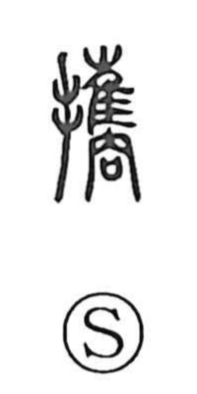

携

Uncategorized
Kun: tazusaeru, tazusawaru | On: kei
to carry in the hand ・ to bring along ・ to take along
Explanation
Originally written 攜, this is a phono-semantic character: the hand element is joined to the phonetic 巂 (kei). The graph 巂 depicts a long-feathered bird (隹) set upon a stand or frame (冏). With the hand added, the whole conveys carrying such a bird in one’s hands. These birds were used in divination and were borne along when leaders sought omens on whether to attack or withdraw; in moments of doubt the rite was performed before the doors of a deity’s altar, effectively “hiring” the god’s counsel and taking heed of the divine will. From this concrete image the character came to mean, more generally, to carry in the hand and to take or bring along.